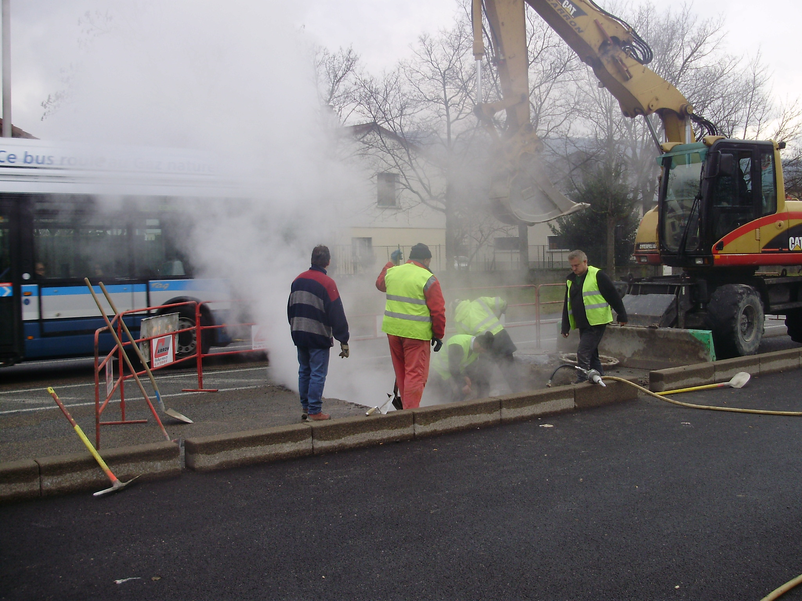
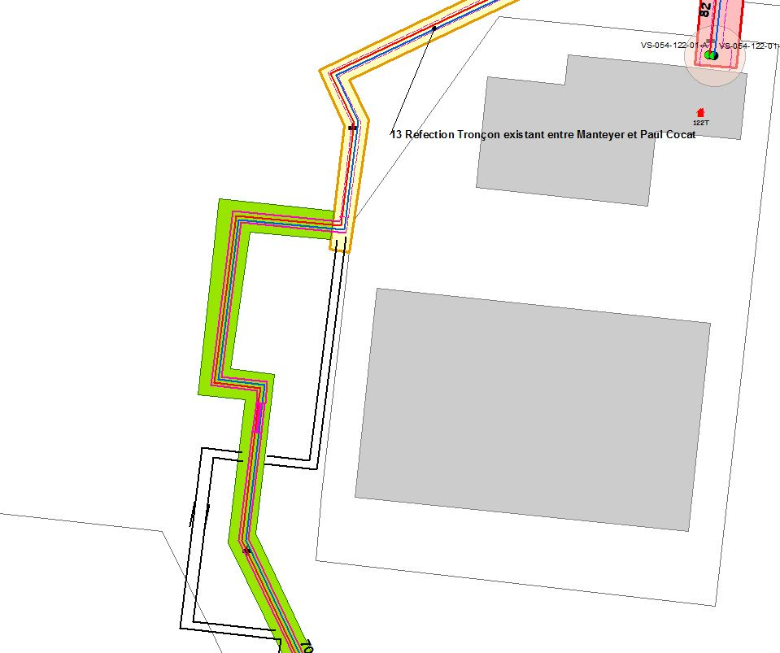
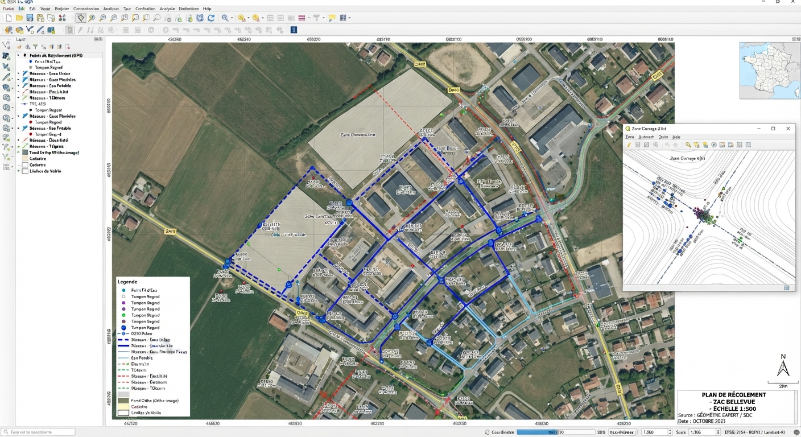
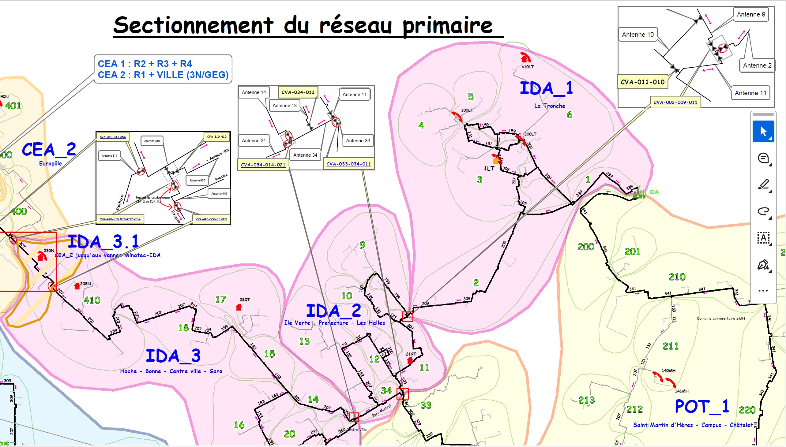

Avant de creuser, de rénover ou de gérer une crise, il faut savoir ce qu'il y a sous terre : la détection de réseau sécurise les travaux et fiabilise les plans.
Fibre, eau, assainissement, réseau de chaleur, gaz ou électricité : chaque réseau enterré ou aérien doit être localisé avec une précision conforme à la réglementation DT-DICT.
Nous intervenons aussi bien en détection initiale qu'en mise à jour de patrimoine existant, avec une traçabilité documentaire complète à chaque étape.

La détection permet de géoréférencer les canalisations et câbles existants avec la classe de précision requise par le projet.

Après travaux, le récolement met à jour les plans existants pour qu'ils reflètent fidèlement ce qui a été posé.

En gestion de crise comme en exploitation courante, un synoptique clair permet d'agir vite sur le bon tronçon de réseau.

Le respect du cadre réglementaire (DREAL, Guichet Unique) exige une documentation à jour et un historique traçable.
Décrivez votre réseau, nous évaluons la méthode d'intervention adaptée.